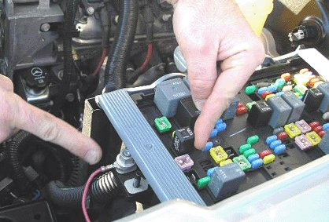
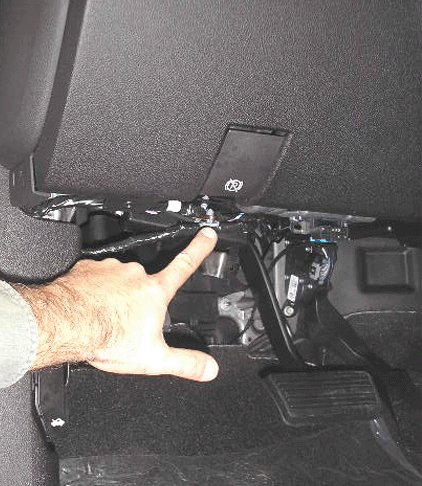
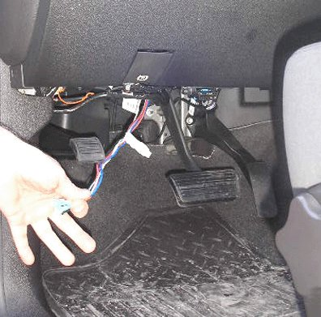
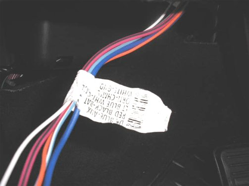
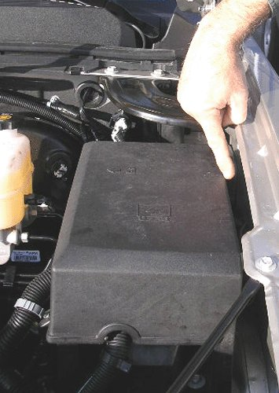
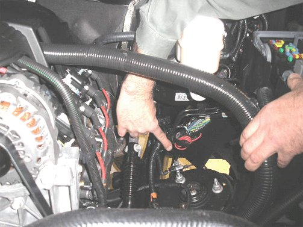
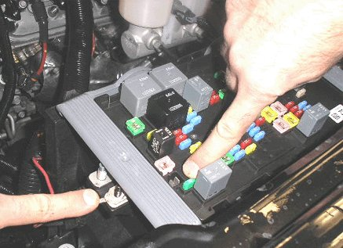

Accessories - Aftermarket Trailer Brake Controller
INFORMATIONBulletin No.: 07-08-45-001G
Date: January 26, 2012
Subject: Procedure for Installation of an Aftermarket Trailer Brake Controller
Models:
2007-2012 Cadillac Escalade, Escalade ESV, Escalade EXT
2007-2012 Chevrolet Avalanche, Silverado, Suburban, Tahoe
2007-2012 GMC Sierra, Yukon, Yukon Denali, Yukon XL, Yukon Denali XL
2008-2010 HUMMER H2
with Integrated Trailer Brake Controller
Supercede:
This bulletin is being revised to add the 2012 model year. Please discard Corporate Bulletin Numbers 07-08-45-001F (Section 08 - Body and Accessories).
Important
Installation of an electric brake controller and the wiring connections outlined in this bulletin are the responsibility of the dealership or customer. These repairs should never be charged to warranty. If you have any questions, please consult with your District Service Manager.
Some customers may request to have an aftermarket trailer brake controller added to their vehicle, OR in lieu of the factory integrated trailer brake controller (ITBC) (RPO JL1).
Installation Instructions
Starting with the new 2007 full-size utilities and pickups and 2008 HUMMER H2, there is no longer an electric trailer brake controller pigtail harness.
To install an aftermarket trailer brake controller, use the four blunt cut wires located near the data link connector.
The following steps should be used to complete the installation.


Important
Ensure that the ringlets are not interfering with the UBEC cover.
1. Place the terminal on the larger of the two studs at the front of the electrical center and secure with an M8 nut. This is circuit #242 to stud #2, to power the aftermarket trailer brake controller.
Important
The fuse is already present in the vehicle to power the electrical trailer brake controller system.
2. ONLY For Vehicles Equipped with JL1- Locate connector X126 or X115 (varies with vehicle build; refer to SI) near the underhood fuse block. Refer to SI Document ID# 1849049 - I/P Harness-Engine Compartment. Circuit 47 from the blunt cut wires near the data link connector will end at connector X126 terminal "G" or X115 terminal "B5." Obtain enough Dark Blue 12 gauge wire to run from X126/X115 to the 7-way trailer connector at the bumper. On one end of the Dark Blue wire attach terminal part number 15304732, located in Delphi Tray 8 and insert into X126 "G" or terminal part number 15304720 located in Delphi Tray 19 and insert into X115 "B5." Run the Dark Blue wire in its own conduit along the frame to the 7-way trailer connector at the bumper. Remove circuit 47 from the 7-way trailer connector terminal "C" and tape the bare terminal and attach to the harness. Attach terminal part number 12110853, located in Delphi Tray 4, to the other end of the Dark Blue wire and insert it into the 7-way trailer connector terminal "C."
3. ONLY For Vehicles Equipped with JL1- The Red/Black wire, circuit 242, must be connected to stud #2 of the 30 Amp fuse of the underhood fuse block. This wire is located between the left fender and the underhood fuse block.
Important
This procedure will not result in any trailer brake related display messages to be set. However, ITBC diagnostics will continue to function. If an ITBC fault is detected, a "Service Trailer Brake System" message will be displayed on the driver information center (DIC) and an appropriate DTC will be stored in the ITBC module. The operator will still be able to adjust gain and access the "Trailer Gain / Output" display page in the DIC. However, the factory installed ITBC system will not sense a trailer connection and will not provide output to the trailer.

4. Locate the trailer brake control circuits that are looped and taped to the main harness under the instrument panel.

5. Pull the trailering wire harness down.

6. Match the vehicle harness label circuit functions to the trailer brake controller jumper harness functions.
Important
The color or wires to be joined together may not match.
- Dark Blue Wire: switched power from controller to trailer brakes
- Red with Black Stripe: fused vehicle power to electrical brake controller
- Light Blue with White Stripe: Brake switch input to power electric brake controller
- White: ground
- Orange: CHMSL (Center High Mounted Stop Lamp) - not required with most systems

7. After completing the under dash connections to the electric brake controller, open the hood and locate the red wire that is taped to the harness between the underhood electrical center and the driver side front fender.
8. Break the tape on the red/black wire and pull it toward the front of vehicle.
9. Remove the lid from the electrical center.
Auxiliary Power (Applies to All LD and 2007-2009 HD's Only) Without JL1

Circuit #742 for Auxiliary Power at the 7-way trailer connector is no longer connected by the GM Assembly Plant. If the customer desires auxiliary power at the trailer connector location (i.e. refrigeration, battery charger or interior light in the trailer), complete the following steps to connect circuit #742:
1. Locate the red/black wire, looped and taped to the chassis harness, below the brake master cylinder.
2. Break the tape and route the wire to the front of the underhood electrical center.

Important
Ensure that the ringlets are not interfering with the UBEC cover.
3. Place the terminal on the smaller of the two studs on the electrical center and secure with an M6 fastener. This is circuit #742 to stud #1 for auxiliary power to the 7-way trailer connector.
4. ONLY for vehicles without RPO TP2 - Auxiliary Battery, install a 40 amp fuse to power the circuit.
Important
For vehicles equipped with RPO TP2 - Devices powered by this fuse will drain the vehicle battery if left connected with the vehicle not running.
Warranty Information
This installation procedure is to be performed at the customer's request and at their expense. It is not a warranty repair and a claim should not be submitted for reimbursement.

Disclaimer